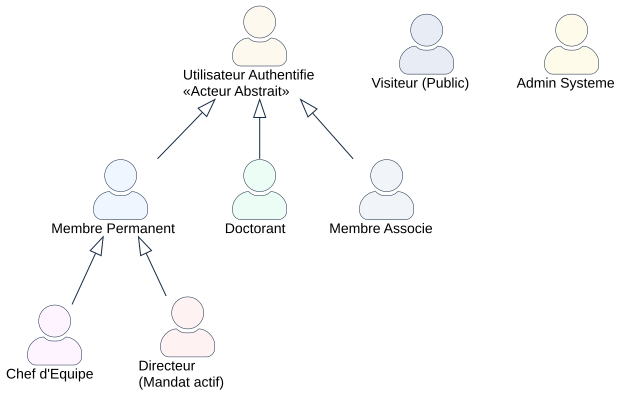
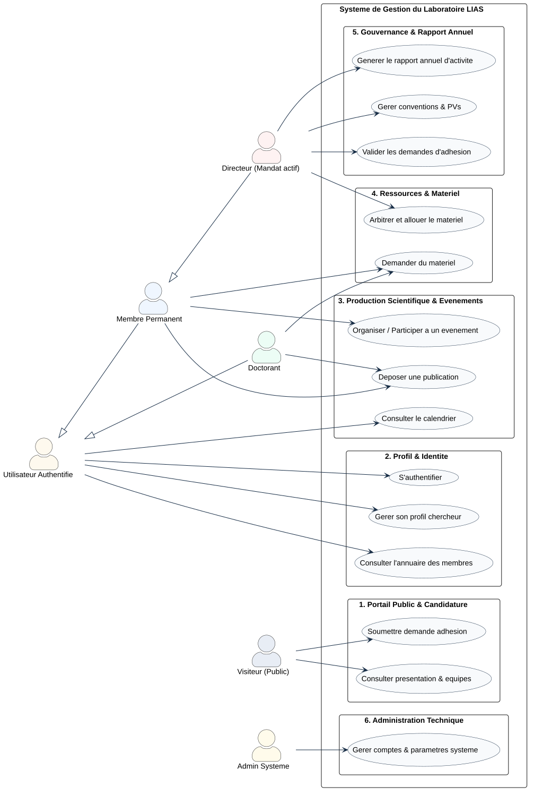
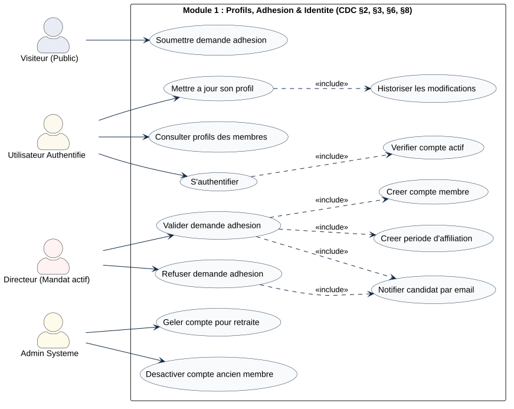
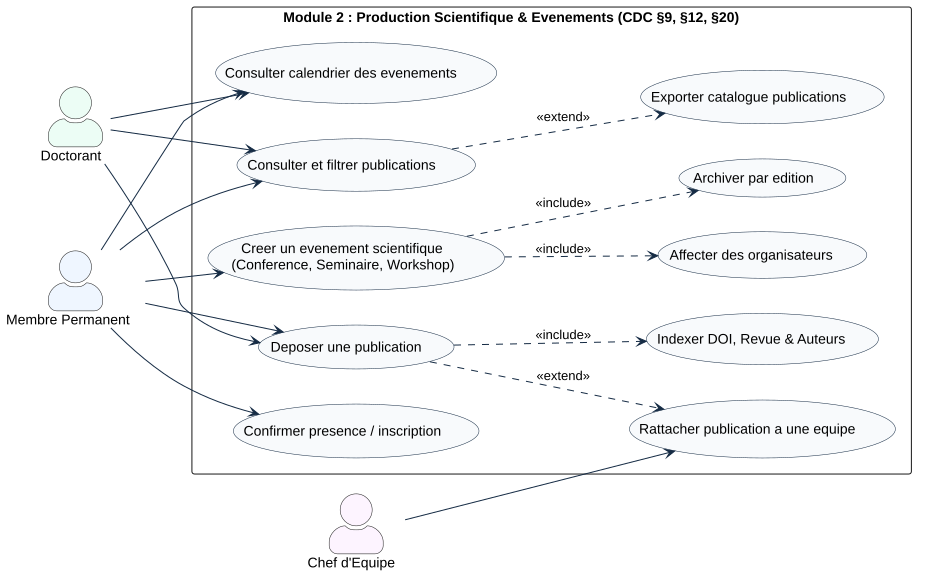
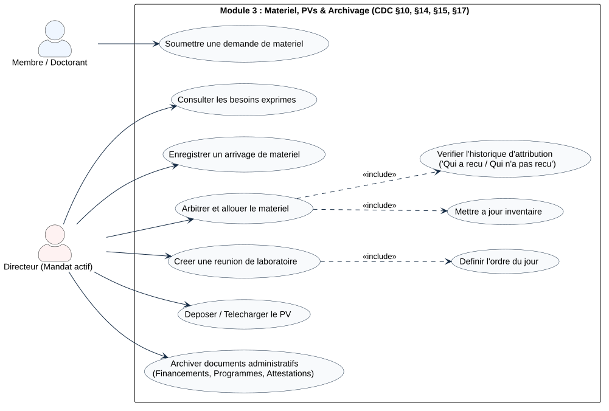
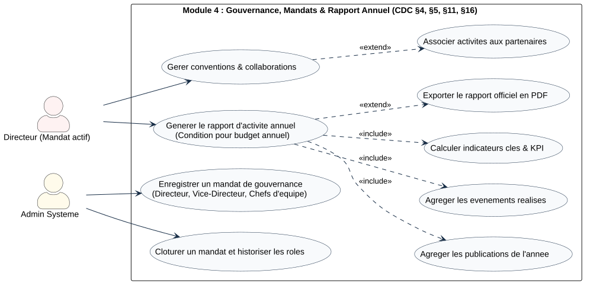

تم توليد هذه المخططات مباشرة عبر محرك PlantUML الرسمي ومطابقتها حرفياً مع بنود دفتر التحملات الأكاديمي (GestionLaboratoireLIAS.pdf). المخططات مرسومة بتنسيق SVG فائق الدقة (Vectoriel) وقابلة للمعاينة المباشرة أو النسخ والطباعة.
تطبيق مبدأ الوراثة الأكاديمي (Généralisation) بين مختلف أدوار المختبر لتفادي تكرار العلاقات:

@startuml skinparam actorStyle awesome skinparam packageStyle rectangle skinparam roundcorner 10 skinparam defaultFontName Arial skinparam ArrowColor #152B44 skinparam ActorBorderColor #152B44 skinparam ActorBackgroundColor #EFF6FF actor "Visiteur (Public)" as Visiteur #E8EDF5 actor "Utilisateur Authentifié\n<>" as UserAuth #FEF9EE actor "Doctorant" as Doc #ECFDF5 actor "Membre Associé" as MembreAssoc #F1F5F9 actor "Membre Permanent" as Membre #EFF6FF actor "Chef d'Équipe" as Chef #FDF4FF actor "Directeur\n(Mandat actif)" as Dir #FEF2F2 actor "Admin Système" as Admin #FFFBEB Doc -up-|> UserAuth MembreAssoc -up-|> UserAuth Membre -up-|> UserAuth Chef -up-|> Membre Dir -up-|> Membre @enduml
يجمع كافة الوظائف المحورية لنظام إدارة المختبر موجهة لمختلف الفاعلين:

@startuml
left to right direction
skinparam packageStyle rectangle
skinparam actorStyle awesome
skinparam defaultFontName Arial
skinparam roundcorner 8
skinparam shadowing false
skinparam ArrowColor #152B44
skinparam UsecaseBorderColor #152B44
skinparam UsecaseBackgroundColor #F8FAFC
actor "Visiteur (Public)" as Visiteur #E8EDF5
actor "Utilisateur Authentifié" as UserAuth #FEF9EE
actor "Doctorant" as Doc #ECFDF5
actor "Membre Permanent" as Membre #EFF6FF
actor "Directeur (Mandat actif)" as Dir #FEF2F2
actor "Admin Système" as Admin #FFFBEB
Doc -up-|> UserAuth
Membre -up-|> UserAuth
Dir -up-|> Membre
rectangle "Système de Gestion du Laboratoire LIAS" {
package "1. Portail Public & Candidature" {
usecase "Consulter présentation & équipes" as UC1
usecase "Soumettre demande adhésion" as UC2
}
package "2. Profil & Identité" {
usecase "S'authentifier" as UC3
usecase "Gérer son profil chercheur" as UC4
usecase "Consulter l'annuaire des membres" as UC5
}
package "3. Production Scientifique & Événements" {
usecase "Déposer une publication" as UC6
usecase "Organiser / Participer à un événement" as UC7
usecase "Consulter le calendrier" as UC8
}
package "4. Ressources & Matériel" {
usecase "Demander du matériel" as UC9
usecase "Arbitrer et allouer le matériel" as UC10
}
package "5. Gouvernance & Rapport Annuel" {
usecase "Valider les demandes d'adhésion" as UC11
usecase "Gérer conventions & PVs" as UC12
usecase "Générer le rapport annuel d'activité" as UC13
}
package "6. Administration Technique" {
usecase "Gérer comptes & paramètres système" as UC14
}
}
Visiteur --> UC1
Visiteur --> UC2
UserAuth --> UC3
UserAuth --> UC4
UserAuth --> UC5
UserAuth --> UC8
Doc --> UC6
Doc --> UC9
Membre --> UC6
Membre --> UC7
Membre --> UC9
Dir --> UC10
Dir --> UC11
Dir --> UC12
Dir --> UC13
Admin --> UC14
@enduml
يوضح دورة حياة العضو، علاقات التضمين الإلزامية «include» عند قبول الانخراط وعند تعديل الملف الشخصي لحفظ الذاكرة التاريخية:

Valider demande adhésion تتضمن وجوباً: Créer compte membre + Créer période d'affiliation + Notifier candidat.Mettre à jour son profil تتضمن آلياً: Historiser les modifications (قاعدة عدم حذف أي معلومة).@startuml
left to right direction
skinparam packageStyle rectangle
skinparam actorStyle awesome
skinparam defaultFontName Arial
skinparam ArrowColor #152B44
skinparam UsecaseBorderColor #152B44
skinparam UsecaseBackgroundColor #F8FAFC
actor "Visiteur (Public)" as Visiteur #E8EDF5
actor "Utilisateur Authentifié" as UserAuth #FEF9EE
actor "Directeur (Mandat actif)" as Dir #FEF2F2
actor "Admin Système" as Admin #FFFBEB
rectangle "Module 1 : Profils, Adhésion & Identité (CDC §2, §3, §6, §8)" {
usecase "Soumettre demande adhésion" as UC_Candidat
usecase "S'authentifier" as UC_Login
usecase "Vérifier compte actif" as UC_CheckActive
usecase "Mettre à jour son profil" as UC_EditProfil
usecase "Historiser les modifications" as UC_HistoProfil
usecase "Consulter profils des membres" as UC_ConsulterProfils
usecase "Valider demande adhésion" as UC_Valider
usecase "Refuser demande adhésion" as UC_Rejeter
usecase "Créer compte membre" as UC_CreerCompte
usecase "Créer période d'affiliation" as UC_Affilier
usecase "Notifier candidat par email" as UC_Notifier
usecase "Geler compte pour retraite" as UC_Geler
usecase "Désactiver compte ancien membre" as UC_Desactiver
}
Visiteur --> UC_Candidat
UserAuth --> UC_Login
UC_Login ..> UC_CheckActive : <>
UserAuth --> UC_EditProfil
UC_EditProfil ..> UC_HistoProfil : <>
UserAuth --> UC_ConsulterProfils
Dir --> UC_Valider
UC_Valider ..> UC_CreerCompte : <>
UC_Valider ..> UC_Affilier : <>
UC_Valider ..> UC_Notifier : <>
Dir --> UC_Rejeter
UC_Rejeter ..> UC_Notifier : <>
Admin --> UC_Geler
Admin --> UC_Desactiver
@enduml
إيداع المنشورات من طرف الباحثين والطلبة، الفهرسة، وتنظيم المؤتمرات والأيام الدراسية:

@startuml
left to right direction
skinparam packageStyle rectangle
skinparam actorStyle awesome
skinparam defaultFontName Arial
skinparam ArrowColor #152B44
skinparam UsecaseBorderColor #152B44
skinparam UsecaseBackgroundColor #F8FAFC
actor "Doctorant" as Doc #ECFDF5
actor "Membre Permanent" as Membre #EFF6FF
actor "Chef d'Équipe" as Chef #FDF4FF
rectangle "Module 2 : Production Scientifique & Événements (CDC §9, §12, §20)" {
usecase "Déposer une publication" as UC_DepotPub
usecase "Indexer DOI, Revue & Auteurs" as UC_IndexPub
usecase "Consulter et filtrer publications" as UC_ConsulterPub
usecase "Rattacher publication à une équipe" as UC_Rattacher
usecase "Exporter catalogue publications" as UC_ExportPub
usecase "Créer un événement scientifique\n(Conférence, Séminaire, Workshop)" as UC_CreerEvt
usecase "Affecter des organisateurs" as UC_AffecterOrg
usecase "Archiver par édition" as UC_ArchiverEvt
usecase "Consulter calendrier des événements" as UC_Calendrier
usecase "Confirmer présence / inscription" as UC_Inscription
}
Doc --> UC_DepotPub
Doc --> UC_ConsulterPub
Doc --> UC_Calendrier
Membre --> UC_DepotPub
UC_DepotPub ..> UC_IndexPub : <>
UC_DepotPub ..> UC_Rattacher : <>
UC_ConsulterPub ..> UC_ExportPub : <>
Membre --> UC_ConsulterPub
Membre --> UC_Calendrier
Membre --> UC_Inscription
Membre --> UC_CreerEvt
UC_CreerEvt ..> UC_AffecterOrg : <>
UC_CreerEvt ..> UC_ArchiverEvt : <>
Chef --> UC_Rattacher
@enduml
تجسيد مطلب التوزيع العادل للعتاد (Distribution équitable) وأرشفة محاضر الاجتماعات (Procès-Verbaux):

«include» Vérifier l'historique d'attribution، لأن دفتر التحملات ينص حرفياً على ضرورة تتبع: "Qui a reçu quoi / Qui n'a pas reçu" لضمان العدالة وتفادي تكرار المنح لنفس المستفيد.
@startuml
left to right direction
skinparam packageStyle rectangle
skinparam actorStyle awesome
skinparam defaultFontName Arial
skinparam ArrowColor #152B44
skinparam UsecaseBorderColor #152B44
skinparam UsecaseBackgroundColor #F8FAFC
actor "Membre / Doctorant" as Membre #EFF6FF
actor "Directeur (Mandat actif)" as Dir #FEF2F2
rectangle "Module 3 : Matériel, PVs & Archivage (CDC §10, §14, §15, §17)" {
usecase "Soumettre une demande de matériel" as UC_DemandeMat
usecase "Consulter les besoins exprimés" as UC_ListeBesoins
usecase "Enregistrer un arrivage de matériel" as UC_Arrivage
usecase "Arbitrer et allouer le matériel" as UC_Arbitrer
usecase "Vérifier l'historique d'attribution\n('Qui a reçu / Qui n'a pas reçu')" as UC_VerifHisto
usecase "Mettre à jour inventaire" as UC_MajInventaire
usecase "Créer une réunion de laboratoire" as UC_CreerReunion
usecase "Définir l'ordre du jour" as UC_OrdreJour
usecase "Déposer / Télécharger le PV" as UC_UploaderPV
usecase "Archiver documents administratifs\n(Financements, Programmes, Attestations)" as UC_ArchiverDocs
}
Membre --> UC_DemandeMat
Dir --> UC_ListeBesoins
Dir --> UC_Arrivage
Dir --> UC_Arbitrer
UC_Arbitrer ..> UC_VerifHisto : <>
UC_Arbitrer ..> UC_MajInventaire : <>
Dir --> UC_CreerReunion
UC_CreerReunion ..> UC_OrdreJour : <>
Dir --> UC_UploaderPV
Dir --> UC_ArchiverDocs
@enduml
يوضح عملية التوليد الآلي للتقرير السنوي (Rapport annuel d'activité) المطلوب للجامعة للحصول على الميزانية:

«include» Agréger les publications de l'année +
«include» Agréger les événements réalisés +
«include» Calculer indicateurs clés & KPI.
@startuml
left to right direction
skinparam packageStyle rectangle
skinparam actorStyle awesome
skinparam defaultFontName Arial
skinparam ArrowColor #152B44
skinparam UsecaseBorderColor #152B44
skinparam UsecaseBackgroundColor #F8FAFC
actor "Directeur (Mandat actif)" as Dir #FEF2F2
actor "Admin Système" as Admin #FFFBEB
rectangle "Module 4 : Gouvernance, Mandats & Rapport Annuel (CDC §4, §5, §11, §16)" {
usecase "Enregistrer un mandat de gouvernance\n(Directeur, Vice-Directeur, Chefs d'équipe)" as UC_CreerMandat
usecase "Clôturer un mandat et historiser les rôles" as UC_FinMandat
usecase "Gérer conventions & collaborations" as UC_Conventions
usecase "Associer activités aux partenaires" as UC_ActivitesPart
usecase "Générer le rapport d'activité annuel\n(Condition pour budget annuel)" as UC_Rapport
usecase "Agréger les publications de l'année" as UC_AgregPubs
usecase "Agréger les événements réalisés" as UC_AgregEvts
usecase "Calculer indicateurs clés & KPI" as UC_CalculKPI
usecase "Exporter le rapport officiel en PDF" as UC_ExportPDF
}
Admin --> UC_CreerMandat
Admin --> UC_FinMandat
Dir --> UC_Conventions
UC_Conventions ..> UC_ActivitesPart : <>
Dir --> UC_Rapport
UC_Rapport ..> UC_AgregPubs : <>
UC_Rapport ..> UC_AgregEvts : <>
UC_Rapport ..> UC_CalculKPI : <>
UC_Rapport ..> UC_ExportPDF : <>
@enduml